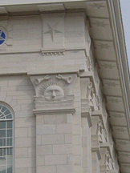

P.O. Box 522
Rockland, Massachusetts 02370
E-mail: merchant@burrows.com
Phone: (800) 347-1795; Phone: (781) 982-1812 Fax: (781) 982-1636
|
 |
Burrows & Company has supplied all the carpet and window curtains for the new Nauvoo Temple for the LDS Church (Mormons) in Nauvoo, Illinois. This extraordinary project was to reconstruct the original temple that was built from 1841-46 and destroyed in 1848 after the Mormon exodus to Utah. The English carpeting is in designs that have been drawn from patterns of the early-mid 19th century, and Madras lace curtains were custom woven in Scotland incorporating symbolic elements from the architecture of the building. The Nauvoo Temple will be dedicated in June, 2002. More information on the Nauvoo Temple. Burrows & Company is very proud to be making wallpaper for the ballroom of the Grand California Hotel at Disneyland in Anaheim, CA. Our "Persis" design is being installed in a custom coloring. Burrows and Company has also had an especially busy year provinding historic carpet reproductions to historic buildings around America. Current projects include rooms at the Iowa Capitol Building in Des Moines, IA (the Treasurer's Offices), the Arkansas Capitol Building in Little Rock, AR (the Governor's Reception Room and the Old Supreme Court Chamber), the Wisconsin Capitol Building in Madison, WI (the Supreme Court Chamber), the Colonnade Club (Pavilion VII, designed by Thomas Jefferson) at University of Virginia in Charlottesville, VA, and the Minneapolis Club in Minneapolis, MN, and weavers at the Stourvale Mill are currently weaving carpets for the Charleston County Courthouse in Charleston, SC. Recently completed projects include the Virginia Governor's Mansion in Richmond, VA, and Dover Hall, near Richmond, VA, and the Stags' Leap Winery in Napa Valley, CA. House museum that have recently been completed, or for which carpets are currently being woven, include Glenview, the Hudson River Museum of Westchester, Yonkers, NY; Riversdale, in Riverdale, MD; Dumbarton House (National Society of Colonial Dames) in Georgetown, Washington D.C.; Codman House (The Grange, Society for the Preservation of New England Antiquities), Lincoln, MA; Stonehurst (Walter Treat Paine Estate), Waltham, MA; Lawnfield, the President Garfield Home (National Park Service), Mentor, OH; Hill-Stead, Farmington, CT; Owens-Thomas House (Telfair Art Museum), Savannah, Georgia; Sarah Orne Jewett House (Society for the Preservation of New England Antiquities), South Berwick, ME; Maymont, Richmond, VA; Thomas Bailey Aldrich Memorial (Strawbery Banke Museum), Portsmouth, NH; Warner House, Portsmouth, NH; Bulloch Hall, Roswell, GA; John Jay House, Katonah, NY; Bartow-Pell Mansion, Bronx, NY; Griswold House, Guilford, CT; Livingston-Backus House, Genessee Country Village and Museum, Mumford, NY; Reese-Peters House, Lancaster, OH; White Hall, Richmond, KY; Hagley House (Muskegon County Museum), Muskegon, MI; Endview Plantation in Virginia, Raynham Hall Museum, Oyster Bay, NY; John Muir National Historic Site (National Park Service), Martinez, CA; Craigdarroch Castle, Victoria, B.C., Canada; Hotel de Paris, Georgetown, CO; and the Isaac Bell House (Preservation Society of Newport County), Newport, RI. |
 J.R.
Burrows & Company
J.R.
Burrows & Company
P.O. Box 522
Rockland, Massachusetts 02370
E-mail:
merchant@burrows.com
Phone: (800) 347-1795; Phone: (781) 982-1812 Fax: (781) 982-1636